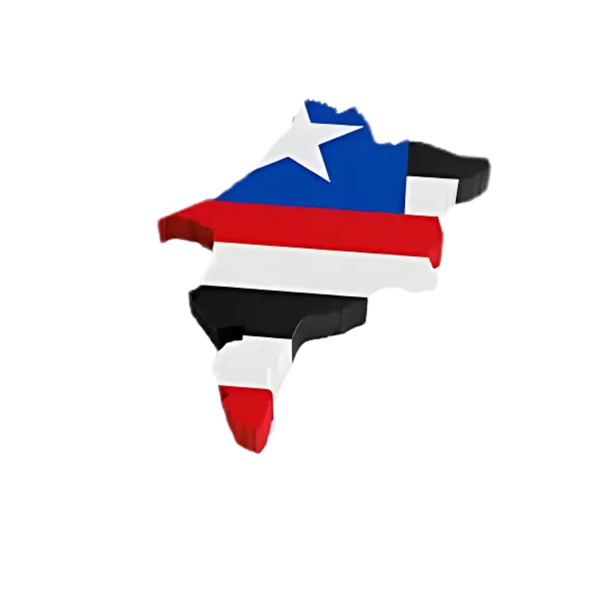

Características principais: Produção diversificada influenciada pela proximidade com a Amazônia e a costa.
O que mais se produz: Bacuri, cacau, madeira, peixes e frutos do mar.
Quantidade de produtos produzidos: A produção varia bastante. A pesca e a exploração madeireira são significativas, enquanto o bacuri e o cacau têm produções menores, mas importantes para a economia local.
Riqueza gerada pelo produto: A pesca e a madeira geram um volume maior de receita, enquanto o bacuri e o cacau agregam valor por serem produtos regionais específicos.
Top 3 maiores clientes:
- Indústrias de processamento de pescado
- Serrarias e indústrias de móveis
- Mercados regionais e nacionais de frutas exóticas
Características principais: Forte expansão do agronegócio, com grandes plantações e pecuária.
O que mais se produz: Arroz, soja, milho e carne de boi.
Quantidade de produtos produzidos: A produção de soja e milho é significativa, com milhões de toneladas por ano. A pecuária também tem um grande rebanho, contribuindo para a produção de carne.
Riqueza gerada pelo produto: A soja e o milho são importantes commodities para exportação e mercado interno, gerando bilhões em receita. A pecuária também tem um impacto econômico considerável.
Top 3 maiores clientes:
- Grandes tradings de grãos (Cargill, Bunge, ADM)
- Frigoríficos (JBS, Marfrig)
- Indústrias de alimentos e ração animal
Características principais: Agricultura diversificada com destaque para fruticultura e produção de alimentos.
O que mais se produz: Caju, coco e frutas tropicais (maracujá, guaraná).
Quantidade de produtos produzidos: A produção de caju é relevante, com potencial para processamento industrial. As frutas tropicais atendem tanto o mercado local quanto o nacional.
Riqueza gerada pelo produto: A fruticultura gera renda para pequenos e médios produtores, com potencial para crescimento através de agroindústrias locais.
Top 3 maiores clientes:
- Indústrias de sucos e alimentos
- Mercados atacadistas e varejistas
- Possível exportação de frutas específicas
Características principais: Combinação de agricultura e pecuária, com destaque para algumas culturas específicas.
O que mais se produz: Algodão, goiaba, feijão, carne de boi e leite.
Quantidade de produtos produzidos: A produção de algodão e goiaba tem certa relevância regional. O feijão é importante para o consumo interno, e a pecuária contribui com carne e leite.
Riqueza gerada pelo produto: O algodão pode atender indústrias têxteis, enquanto a goiaba tem mercado para consumo fresco e processamento. A pecuária gera renda para os produtores locais.
Top 3 maiores clientes:
- Indústrias têxteis (para o algodão)
- Mercados regionais e nacionais de frutas
- Laticínios e frigoríficos locais e regionais
Norte
A produção é mais limitada por causa da floresta. Destaque para pesca, cacau e madeira.
Sul
- Soja: 4,4 milhões de toneladas (2023/2024), 40% da produção estadual de grãos.
- Milho: 1,3 milhão de toneladas (2018).
- Arroz, feijão, algodão: Também com produção significativa.
Leste
- Caju: 100 mil toneladas/ano.
- Guaraná: 5% da produção estadual.
Oeste
- Algodão: 200 mil toneladas/ano (15% do total estadual).
- Goiaba: 70 mil toneladas/ano.

| Região | Produto | Rendimento |
|---|---|---|
| Norte | Cacau | Dados limitados |
| Norte | Pesca | Importante para a economia |
| Sul | Soja | 3.212 kg/ha |
| Sul | Milho | 3.000 kg/ha |
| Sul | Algodão | 1.200 kg/ha |
| Sul | Arroz | 6.000 kg/ha |
| Leste | Caju | 15.000 kg/ha |
| Leste | Coco | 12.000 frutos/ha |
| Leste | Maracujá | 20.000 kg/ha |
| Oeste | Algodão | 1.200 kg/ha |
| Oeste | Feijão | 1.500 kg/ha |
| Oeste | Goiaba | 25.000 kg/ha |
- Norte: Equatorial Energia, Grupo Mateus, CAEMA.
- Sul: Bunge Brasil, Cargill Agrícola, SLC Agrícola.
- Leste: Suzano, Frigotil, ACO Verde do Brasil.
- Oeste: Fribal Franchising, Alumar, Ferrovia Norte-Sul.
- Norte: São Luís, Paço do Lumiar, Raposa, Viana.
- Sul: Balsas, Imperatriz, Davinópolis, Estreito.
- Leste: Caxias, Timon, Coelho Neto, Codó.
- Oeste: Açailândia, Barra do Corda, Grajaú, São João dos Patos.